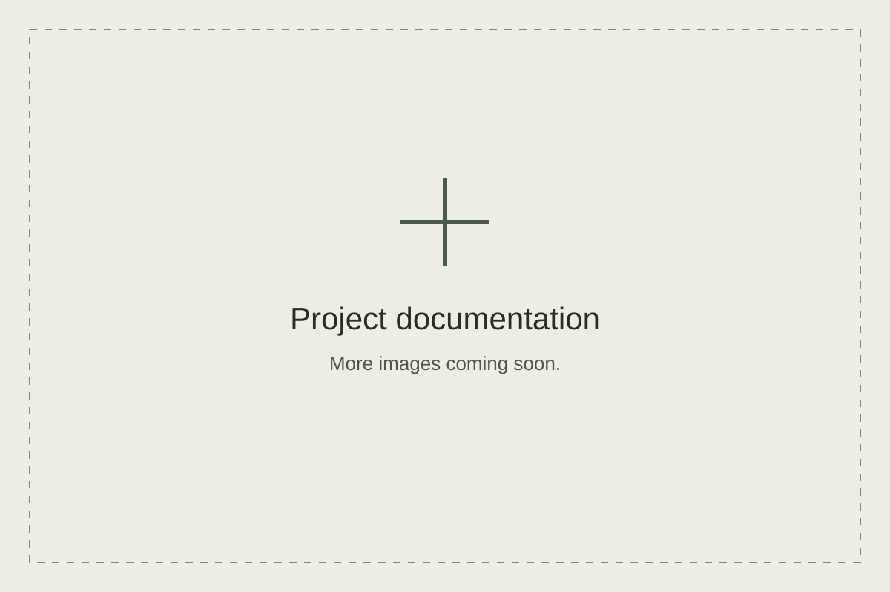

Project#2 MITV
Choose a city marker to read its story. The map background and detail photographs will be added here.

Project 02 · SET-01
Project 02 · SET-02
Project 02 · SET-03
Project 02 · SET-04
Choose a city marker to read its story. The map background and detail photographs will be added here.
